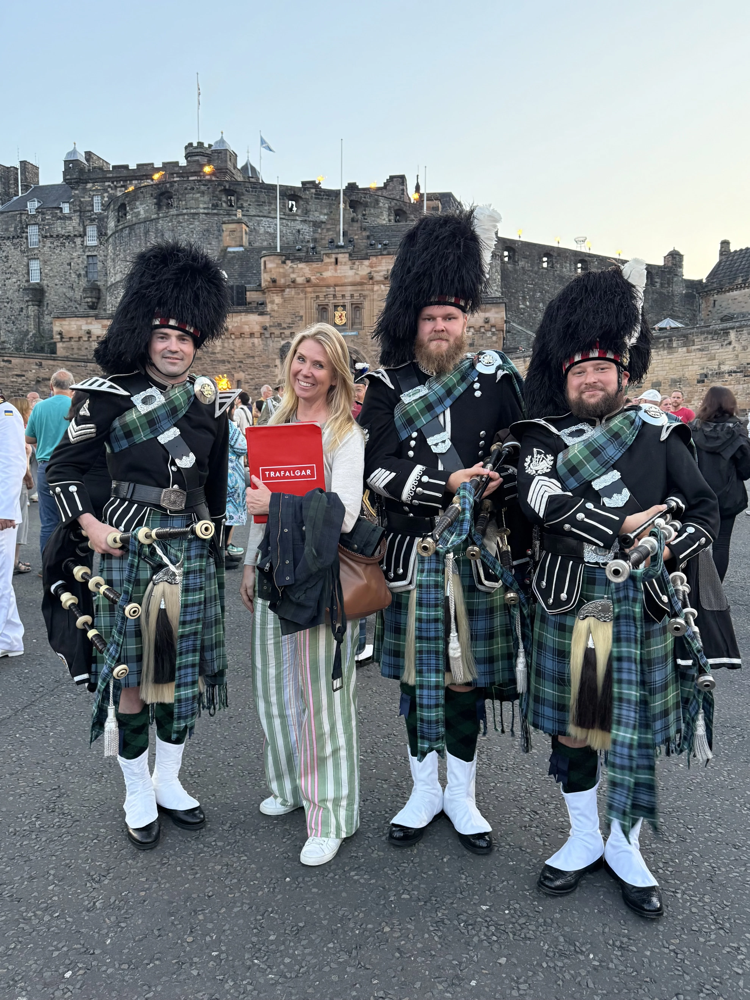
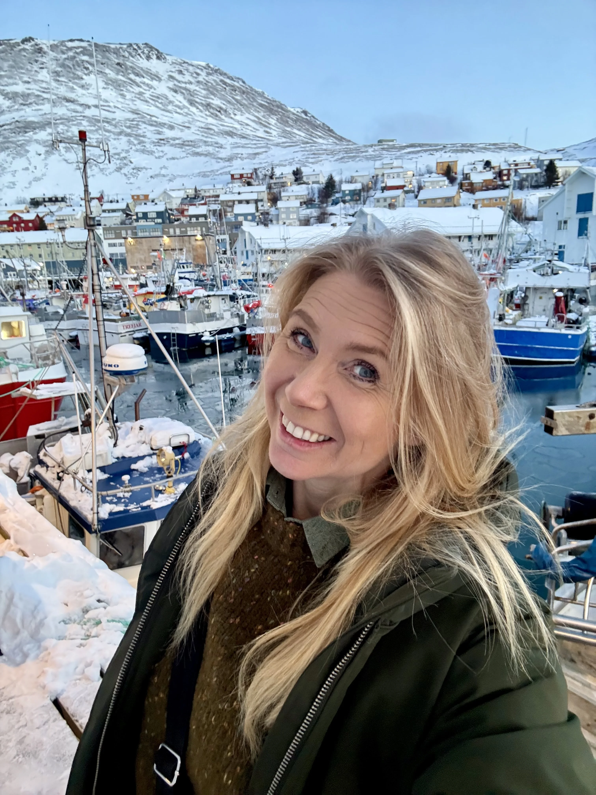
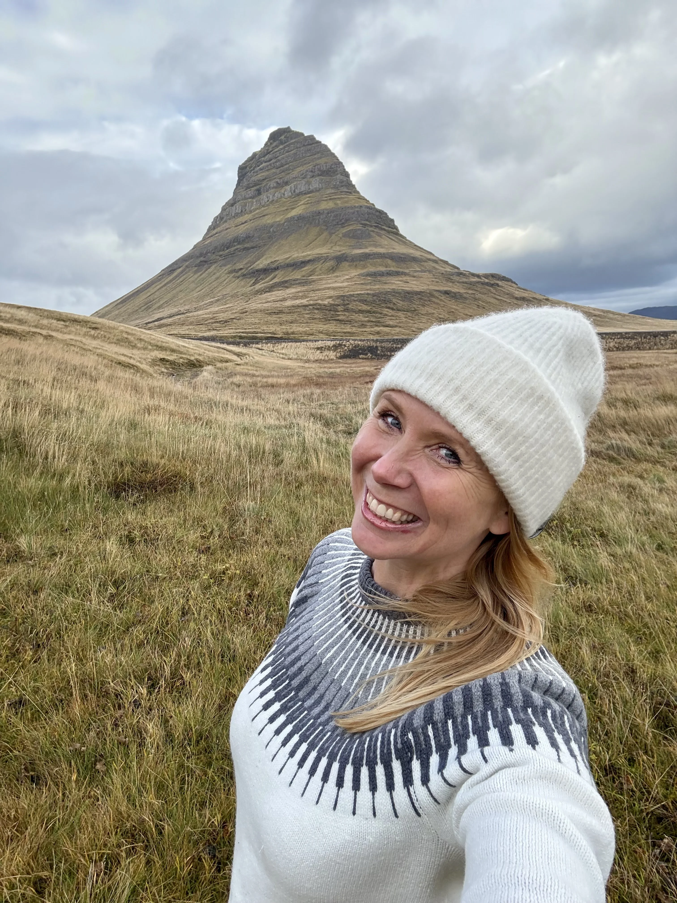

Welcome
My name is Margot Björck and I am thrilled to be your Travel Director on Best of Britain with Trafalgar. I am here to help answer questions, support you along the way and make sure the journey begins clearly and confidently.
You have chosen a fantastic itinerary and our 11 days on tour will be filled with amazing views, interesting places and people, great food, exciting history and lots of fun.
I will be meeting you at the hotel on the day of departure from London. This page is here to give you a little more context before we meet, and to make those final pre-tour days feel easier and more personal.
Official Trafalgar communication should always be treated as the main source for timings and operational details. Think of this page as my extra welcome, plus the practical reminders I know people usually appreciate.
Good for you to know
A few clear reminders before departure can make the start of the tour feel much easier, so this page keeps them together in one simple place.
Local currency
The UK uses Pounds Sterling (£ GBP).
Weather
The weather in Britain can be unpredictable, so layers and a proper waterproof are always a smart idea.
Punctuality matters
We have a lot to enjoy in a short amount of time, so good timekeeping really helps the whole itinerary run well.
Porterage
Porterage is included for one suitcase per person, so manageable luggage is still the most comfortable option.
Meals
Included meals run on set timings and are based on local cuisine and local standards.
British hotels vary
Room sizes and layouts can feel different from what travellers are used to elsewhere, especially in older properties.
A little of the route's atmosphere
Best of Britain moves through some wonderful scenery, so a few image moments help this page feel warmer and more real alongside the practical notes.




A Margot moment
Portrait shots work best as smaller features, so they stay personal without awkward cropping.
Before you travel
The tour begins in London and covers a lot of ground in 11 days, so it is worth arriving with the basics well organised and your joining details easy to find.
Check your joining details
Make sure you know exactly where and when to be ready on the morning the tour begins in London.
Keep essentials close
Passport, wallet, phone, charger and medications are much better kept accessible than packed deep inside your case.
Expect a moving itinerary
This is a highlights-style tour, so lighter packing and a little flexibility go a long way.
Save the useful links
Keep your official Trafalgar details, this page and Margot's contact details somewhere easy to reach on your phone.
What to expect from the weather
The weather across Britain can change quickly, sometimes within the same day. Forecasts help a little, but layers and a reliable waterproof usually help much more.
A practical reality
You may get sunshine, wind and rain in one day, especially as we move north and west through the route.
Best approach
Comfortable layers, a proper waterproof jacket and shoes you trust tend to do most of the work on this itinerary.
What to pack
Most travellers find they use less than they expect. Comfortable, practical and easy to manage is usually the best approach on this tour.
Essentials
- Comfortable walking shoes
- Layered clothing for changing conditions
- A reliable waterproof jacket
- A small day bag
- A reusable water bottle
- A UK Type G plug adapter
- Optional wired headphones with a 3.5mm jack
Packing smarter
- Pack for comfort and movement, not just in case.
- Manageable luggage always makes touring easier.
- Layers matter more than bulky extras.
- Keep anything genuinely important in your day bag on travel days.
Staying connected
For written communication on tour, practical updates and sharing facts, pictures and moments, WhatsApp is often the easiest option. If needed, I can also help with that when we meet.
Before you leave
Save this page, save Margot to your contacts, and keep your official joining information easy to find.
Hotel Wi-Fi
Most hotels offer Wi-Fi, which is usually enough for messages, updates and checking the practical details you need.
Practical notes
A few small realities can make the trip feel much smoother, from timekeeping and walking to hotel styles, money and the general rhythm of touring.
A highlights itinerary
This is a fast-moving journey with some early starts and longer travel stretches, balanced by a lot of rewarding places and standout scenery.
Walking
Expect uneven streets, stairs and days where comfortable shoes matter far more than dressing up.
Included meals
Breakfast is included daily and some dinners are provided, so being ready on time helps the itinerary run smoothly.
Travelling as a group
A relaxed and respectful group dynamic always makes the journey more enjoyable for everyone.
Money and payments
Card payments are widely accepted, though having a small amount of local cash can still be useful now and then.
Optional experiences
These are introduced during the tour once timings and logistics are clearer. Participation is always optional.
On the coach
The coach becomes our moving base between destinations. A few simple habits help keep things comfortable, safe and pleasant for everyone.
- Seat rotation usually happens daily and will be explained clearly on Day One.
- There is often a WC on board, and regular comfort stops are also planned.
- Snacks are fine, but hot food and hot drinks are best avoided while moving.
- Bring a small day bag with what you need during the day.
- Main suitcases stay in the luggage hold on travel days, so keep essentials with you.
- Seatbelts must be worn while the coach is moving.
Important contact details
Save these now rather than trying to find them again once your travel is already underway.
Margot Björck
@margot_traveldirector_ttc
Save Margot to your contacts
Travel with Margot
Questions before the tour?
Before the tour begins, I may not always be able to reply immediately, but messages will be checked as time allows.
Once the tour is underway, I will always do my best to keep everyone informed and make things feel clear and manageable.
For anything that needs immediate attention before Day One, please contact European Guest Services using the details below.
+44 207 620 8900
Looking very much forward to seeing you soon.